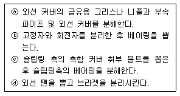
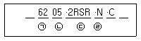

천장크레인운전기능사 (2015-01-25 기출문제)
1과목: 임의 구분
1. 천장크레인의 용량은 정격하중과 스팬으로 표기하는 것이 보통이지만 한 가지를 더 추가한다면?
- 양정
- 권상속도
- 횡행속도
- 주행속도
(정답률: 84%)

2. 다음 중 크레인의 훅 블록 또는 달기구의 구비조건이 아닌 것은?
- 훅의 국부 마모는 원치수의 10% 이내일 것
- 훅 블록에는 정격하중이 표기 되어 있을 것
- 훅 부의 볼트, 너트 등은 풀림, 탈락이 없을 것
- 훅 해지 장치는 균열, 변형 등이 없을 것
(정답률: 87%)
3. 크레인 권상 브레이크의 제동 토크는 정격하중에 상당하는 하중을 걸고 권상 시 권상 토크의 몇 배 이상이어야 하는가?
- 1.5배
- 2배
- 2.5배
- 3배
(정답률: 62%)
4. 크레인의 과부하 방지장치용 시브 피치원 직경과 통과하는 와이어로프 지름의 비는 얼마 이상이어야 하는가?
- 2 이상
- 3 이상
- 4 이상
- 5 이상
(정답률: 49%)
5. 천장크레인 구동축의 안전조건과 가장 거리가 먼 것은?
- 축은 변형 또는 마모가 없을 것
- 축에 가공된 키 홈은 균열 또는 변형이 없을 것
- 축에 사용된 키는 풀림, 빠짐 및 변형이 없을 것
- 축심은 축의 회전속도와 비례하는 진동을 할 것
(정답률: 89%)
6. 거더 중 부식에 강하며 대 하중, 편심 하중을 받는데 가장 유리한 것은?
- 플레이트 거더
- 트러스 거더
- 박스 거더
- 강관구조 거더
(정답률: 64%)
7. 크레인에 사용되는 훅에 대한 설명 중 틀린 것은?
- 훅의 재질은 단조강을 사용한다.
- 양훅은 일반적으로 소형 크레인(소용량)에 시용된다.
- 장기간 사용하면 벤딩, 경화가 일어나므로 일정기간 사용 후 소둔 처리한다.
- 훅은 사용 상태에 따라 편훅과 양훅이 있다.
(정답률: 57%)
8. 직류전동기가 아닌 것은?
- 분권전동기
- 농형 유도전동기
- 복권전동기
- 직권전동기
(정답률: 75%)
9. 드럼 홈의 지름은 와이어로프의 공칭지름보다 몇 % 크게 하는 것이 좋은가?
- 10
- 20
- 30
- 40
(정답률: 45%)
10. 천장크레인 운전실에 대한 설명으로 옳지 않은 것은?
- 거더의 한쪽 끝 상단부에 설치한다.
- 운전실 내부에는 배전반, 제어기, 브레이크 페달 등이 운전에 편리하도록 배치되어야 한다.
- 개방형은 단열을 하지 않는다.
- 밀폐형은 매연, 혹한・혹서 시에 대한 대책을 세울 수 있다.
(정답률: 60%)
11. 브레이크 드럼과 라이닝에 대하여 기술한 것이다. 틀린 것은?
- 드럼의 제동 면이 과열하면 마찰계수가 증가한다.
- 드럼과 라이닝의 간격은 드럼직경의 1/150~1/200 이다.
- 드럼은 열팽창에 의하여 직경 변화가 있다.
- 드럼 제동면의 요철이 2㎜에 도달하면 가공 또는 교환하여야 한다.
(정답률: 46%)
12. 크레인 권상장치용 제한 개폐기(limit switch)에 대한 설명으로 맞는 것은?
- 전기적으로 되어 있으므로 고장이 없다.
- 드럼에 로프가 과권이 될 경우 전류를 차단하여 회전을 정지시키는 장치이다.
- 드럼의 회전수를 조정하는 장치이다.
- 필히 주전원을 연결하고 조정 작업을 하여야 한다.
(정답률: 82%)
13. 비상정지장치에 대한 설명으로 부적합한 것은?
- 비상시 조작할 경우에만 작동된다.
- 운전자가 조작 가능한 위치에 설치한다.
- 작동된 경우에는 동력이 차단되어야 한다.
- 위험구역에 접근하면 자동으로 작동되어야 한다.
(정답률: 80%)
14. 비상정지장치가 작동된 후의 상태가 아닌 것은?
- 주행레버의 작동불능상태
- 횡행레버의 작동불능상태
- 권상레버의 작동불능상태
- 모든 조명의 소등상태
(정답률: 93%)
15. 천장크레인 좌우 차륜의 직경 차 한도로 알맞은 것은?
- 구동륜 - 원 치수의 0.3%, 종동륜 - 원 치수의 0.5%
- 구동륜 - 원 치수의 0.2%, 종동륜 - 원 치수의 0.5%
- 구동륜 - 원 치수의 0.3%, 종동륜 - 원 치수의 0.2%
- 구동륜 - 원 치수의 0.2%, 종동륜 - 원 치수의 0.3%
(정답률: 68%)
16. 제어기(Controller)의 설명으로 옳지 않은 것은?
- 전동기의 1차와 2차 제어를 실시하는 것을 직접 가역제어기라 한다.
- 1차의 보조회로를 직접 접촉하여 전자코일을 제어하는 것을 마스터 컨트롤러라 한다.
- 핸들의 외형 구조에 따라 크랭크식과 레버식이 있다.
- 제어조작기구에 따라 드럼형과 캠형의 두 종류가 있다.
(정답률: 50%)
17. 전동기에 대한 설명으로 옳지 않은 것은?
- 교류전동기는 기동회전력이 크고 부하의 변동에 따라 속도가 변화하는 정출력 특성이 있으므로 크레인의 감아올림, 프로펠러, 팬 등에 사용된다.
- 교류 권선형 유도전동기는 고정자 및 회전자의 양쪽에 권선이 있으며, 이 회전자의 권선에 슬립 링을 통해서 외부저항을 증강하면 부하를 걸었을 때 속도를 가감할 수 있다.
- 직류전동기에서 전기자는 회전부분을 가리키며, 코일이 들어가는 슬롯이 있는 성층철심으로 구성된다.
- 교류전동기 고정자의 슬롯에 넣은 코일은 위상이라는 세개의 권선을 형성하도록 연결되어 있다.
(정답률: 38%)
18. 크레인 용어 중 양정을 옳게 설명한 것은?
- 주행레일과 레일의 간격
- 횡행레일과 레일의 간격
- 건물바닥이나 지상에서 크레인 상면까지의 거리
- 상한 리미트 스위치 작동지점부터 하한 리미트 스위치 작동지점까지의 수직 거리
(정답률: 73%)
19. 어떤 천장크레인의 시험하중이 110톤일 때 이 크레인으로 작업할 수 있는 하중의 범위는?
- 100톤 이하
- 120톤 이하
- 125톤 이하
- 175톤 이하
(정답률: 74%)
20. 과부하 방지장치의 구비조건이 아닌 것은?
- 성능검정 합격품일 것
- 정격하중의 1.1배 권상시 경보와 함께 권상, 횡행, 주행 동작이 불가능한 구조일 것
- 과부하시 운전자가 용이하게 조정할 수 있는 곳에 설치 할 것
- 임의로 조정할 수 없도록 봉인되어 있을 것
(정답률: 54%)
2과목: 임의 구분
21. 저항기에 있어서 중간속도로 장시간 운전할 경우 일어나는 현상 설명으로 가장 적합한 것은?
- 저항기의 온도가 상승한다.
- 전동기의 온도가 내려간다.
- 다른 속도의 운전과 전동기 온도는 동일하다.
- 정격속도로 운전하는 것보다 유리하다.
(정답률: 70%)
22. 천장크레인의 운동속도에 대한 설명 중 틀린 것은?
- 권상장치에서의 속도는 양정이 짧은 것과 권상응력이 큰 것은 빠르게 작동하도록 한다.
- 권상장치에서 속도는 하중이 가벼운 것 보다 무거운 것을 느리게 작동되게 한다.
- 위험물을 운반 시는 가능한 저속으로 운전함이 좋다.
- 주행속도는 가능한 저속으로 운전하는 것이 좋다.
(정답률: 77%)
23. 다음 중 크레인의 안전작업과 거리가 먼 것은?
- 크레인의 탑승은 지정된 사다리를 이용한다.
- 신호수의 사소한 신호에도 주의를 한다.
- 정격하중 이상의 중량물 권상을 금지 한다.
- 크레인의 정지시는 신속한 정지를 위하여 역상제동을 사용한다.
(정답률: 89%)
24. 변압기는 어떤 원리를 이용한 전기장치인가?
- 전자 유도작용
- 전류의 화학작용
- 정전 유도작용
- 전류의 발열작용
(정답률: 76%)
25. 전기 기기의 불꽃(Spark) 발생을 막기 위한 방법으로 틀린 것은?
- 스위치의 개폐를 신속히 행한다.
- 스위치의 접촉면에 먼지나 이물질이 없도록 한다.
- 접촉면을 매끄럽게 유지시킨다.
- 교류보다 직류를 많이 사용해야 한다.
(정답률: 76%)
26. 볼베어링에서 볼을 적당한 간격으로 유지시키는 것은?
- 부시(bush)
- 레이스(race)
- 하우징(housing)
- 리태이너(retainer)
(정답률: 46%)
27. 다음 구름 베어링에 대한 설명으로 틀린 것은?
- 과열의 위험이 적다.
- 마찰계수가 적고 동력 손실이 적다.
- 윤활유가 적게 들고 급유에 드는 수고가 적다.
- 저널의 길이를 짧게 할 수 있다.
(정답률: 59%)
28. 양축이 동일평면 내에 있고, 그 축선이 30°이하의 각도로 교차하는 경우에 사용되는 축 이음으로서 훅 조인트라고도 하며, 양축단에 각각 요크(yoke)를 부착하고, 이것을 십자형의 핀으로 자유로이 회전할 수 있도록 연결한 축 이음은?
- 플렉시블 커플링
- 자재이음(유니버셜 조인트)
- 오울덤 커플링
- 고정축이음
(정답률: 75%)
29. 운전 중 컨트롤러(controller) 베어링에 기름이 마르거나 레버(Lever)조정이 불량하였을 때 나타나는 현상으로 가장 적합한 것은?
- 스파크가 일어난다.
- 핸들(레버)이 무겁다.
- 작동이 안된다.
- 정지한다.
(정답률: 79%)
30. 다음은 전동기 분해순서를 열거한 것이다. 바르게 순서대로 열거한 항목은?

- ⓐ-ⓑ-ⓒ-ⓓ
- ⓐ-ⓒ-ⓑ-ⓓ
- ⓓ-ⓐ-ⓑ-ⓒ
- ⓐ-ⓒ-ⓓ-ⓑ
(정답률: 48%)
31. 크레인 작업종료시의 주의사항으로 틀린 것은?
- 크레인은 작업을 종료한 위치에 정지시켜 둔다.
- 주배선용 차단기는 내려놓는다.
- 전용의 줄걸이 작업 용구를 사용하고 있는 경우는 조정을 소정의 위치에 내려놓는다.
- 훅 블록은 작업자나 차량의 통행에 지장을 주지 않는 높이까지 권상시켜 둔다.
(정답률: 70%)
32. 다음은 기어에 대하여 서로 관계있는 것 끼리 묶어 놓았다. 틀린 것은?
- 두 축이 평행 - 헬리컬 기어
- 두 축이 교차 - 인터널 기어(내 치차)
- 두 축이 평행도 아니고 교차도 아님 - 평기어
- 두 축이 평행 - 스퍼기어(평치차)
(정답률: 46%)
33. 천장크레인의 자동 도유 장치는 일반적으로 어느 곳에 도유 하는가?
- 주행 차륜 축
- 주행 차륜 보스
- 주행 차륜 플랜지
- 주행 레일기어
(정답률: 55%)
34. 전기 저항의 설명으로 틀린 것은?
- 물질 속을 전류가 흐르기 쉬운가 어려운가의 정도를 표시하며, 단위는 옴(Ω)이다.
- 온도 1℃ 상승하였을 때 변화한 저항 값의 비가 재료의 고유저항 또는 비저항이다.
- 도체의 저항은 그 길이에 비례하고 단면적에 반비례한다.
- 도체의 접촉면에 생기는 접촉 저항이 크면 열이 발생하고 전류의 흐름이 떨어진다.
(정답률: 51%)
35. 천장크레인에 사용하는 전원은 주로 몇 볼트를 사용하는가?
- 110
- 440
- 540
- 640
(정답률: 86%)
36. Bearing의 식별기호 이다. 안지름에 해당하는 번호는?

- ㉠
- ㉡
- ㉢
- ㉣
(정답률: 78%)
37. 천장크레인의 급출발, 급정지하면 안 되는 사유와 가장 거리가 먼 것은?
- 크레인에 기계적 무리를 가하지 않도록 하기 위하여
- 갑자기 출발하면 인양 화물의 움직임이 비교적 적으므로
- 취급 물건이 관성에 의하여 심하게 흔들리면 매우 위험하므로
- 갑자기 과전류가 흘러 전기장치에 무리가 갈 수 있으므로
(정답률: 81%)
38. 다음 중 브러시를 사용하지 않는 전동기는?
- 직류 전동기
- 권선형 유도전동기
- 정류자 전동기
- 농형 유도전동기
(정답률: 53%)
39. 임시수리에 대해서 기술한 것으로 맞지 않는 것은?
- 순회검사에서 발견한 것으로 수리를 필요로 하는 사항
- 돌발적으로 생긴 고장에 대하여 바로 수리를 행하는 사항
- 정기검사까지의 기간이 길 때 사용 정도에 따라서 중간에 국부적으로 검사 수리하는 사항
- 고장이 생기지는 않았으나 운전자가 고장 가능성이 있다고 판단하고 수리하는 사항
(정답률: 62%)
40. 운전 전 배전반의 점검 중 가장 옳은 것은?
- 파워(Power) 램프의 점등을 확인한다.
- 제어기를 운전하여 본다.
- 그랩의 움직임을 확인한다.
- 주행, 횡행시의 요동 또는 속도를 확인한다.
(정답률: 73%)
3과목: 임의 구분
41. 와이어로프의 굵기는 무엇으로 나타내는가?
- 외접원의 직경
- 원둘레
- 스트랜드의 직경
- 내접원의 직경
(정답률: 56%)
42. 권상용 체인으로 적합하지 않은 것은?
- 안전율이 5 이상일 것
- 연결된 5개의 링크를 측정하여 연신율이 제조당시 길이의 7% 이하일 것
- 링크 단면의 지름감소가 당해 체인의 제조시보다 10%이하일 것
- 심한 부식이 없을 것
(정답률: 50%)
43. 와이어로프의 교체시기가 아닌 것은?
- 녹이 생겨 심하게 부식된 것
- 소선의 수가 10% 이상 단선된 것
- 공칭지름이 3% 초과 마모된 것
- 킹크가 생긴 것
(정답률: 67%)
44. 천장크레인에서 하중이 40톤인 화물을 들어올리기 위해서는 와이어로프를 몇 가닥으로 해야 하는가? (단, 와이어로프의 직경은 20㎜, 절단하중은 20톤, 자체무게는 0톤이며, 안전계수는 7로 한다.)
- 2가닥(2줄 걸이)
- 8가닥(8줄 걸이)
- 14가닥(14줄 걸이)
- 20가닥(20줄 걸이)
(정답률: 60%)
45. 와이어로프 1줄 걸이 방법의 특징으로 틀린 것은?
- 짐의 중심 잡기가 용이하다.
- 작업이 용이하고 회전이 쉽다.
- 달아 올리는 순간 짐이 돌거나 이동하기 쉽다.
- 짐이 한쪽으로 치우치면 동여 맨 로프에서 짐이 빠져 떨어질 위험이 있다.
(정답률: 71%)
46. 가로 3m, 세로 2m, 높이 1m인 구리의 무게는 몇 톤(ton)인가? (단, 구리의 비중은 9로 한다.)
- 0.54
- 5.4
- 54
- 540
(정답률: 66%)
47. 와이어로프 구성기호 6×19의 설명으로 옳은 것은?
- 6은 소선수, 19는 스트랜드수
- 6은 안전계수, 19는 절단하중
- 6은 스트랜드수, 19는 절단하중
- 6은 스트랜드수, 19는 소선수
(정답률: 58%)
48. 줄걸이 작업시의 기본적인 주의사항으로 틀린 것은?
- 줄걸이 작업 중 훅은 운반물체의 중심 위에 위치시킬 것
- 권하 작업 시 급격한 충격을 피할 것
- 줄걸이 각도는 원칙적으로 60° 이상으로 할 것
- 권하 작업 시 안전사항을 눈으로 확인할 것
(정답률: 77%)
49. 크레인용 와이어로프에 대한 설명으로 틀린 것은?
- 와이어로프의 재질은 탄소강이며 소선의 강도는 135∼180kgf/mm2 정도이다.
- 고열 작업용으로 스트랜드 한 줄을 심으로 하여 만든 로프도 있다.
- 와이어로프의 꼬기와 스트랜드의 꼬기 방향이 반대인 것을 랭꼬임이라 한다.
- 랭꼬임이 보통꼬임보다 손상율이 적으며, 장시간 사용에 도 잘 견딘다.
(정답률: 56%)
50. 와이어로프 작업자가 줄걸이 작업을 실시할 때 짐의 중량에 따른 안전작업 방법이 아닌 것은?
- 짐의 중량을 어림짐작하여 작업한다.
- 정격 하중을 넘는 무게의 짐을 매달지 않는다.
- 상례적으로 정해진 짐의 전문적인 줄걸이 용구를 만들어 작업한다.
- 짐의 중량 판단에 자신이 없을 때는 상급자에게 문의하여 작업한다.
(정답률: 89%)
51. 안전・보건표지의 종류와 형태에서 그림의 안전 표지판이 나타내는 것은?
- 병원 표지
- 비상구 표지
- 녹십자 표지
- 안전지대 표지
(정답률: 69%)
52. 해머 사용 시 주의사항이 아닌 것은?
- 쐐기를 박아서 자루가 단단한 것을 사용한다.
- 기름이 묻은 손으로 자루를 잡지 않는다.
- 타격면이 닳아 경사진 것은 사용하지 않는다.
- 처음에는 크게 휘두르고, 차차 작게 휘두른다.
(정답률: 88%)
53. 훅(Hook)의 점검과 관리 방법을 설명한 것 중 맞는 것은? (문제 오류로 실제 시험에서는 1, 3번이 정답처리 되었습니다. 여기서는 1번을 누르면 정답 처리 됩니다.)
- 입구의 벌어짐이 20% 이상 된 것은 교환하여야 한다.
- 훅의 안전계수는 3 이하이다.
- 훅은 마모, 균열 및 변형 등을 점검하여야 한다.
- 훅의 마모는 와이어로프가 걸리는 곳에 5㎜의 홈이 생기면 그라인딩 한다.
(정답률: 77%)
54. 볼트머리나 너트의 크기가 명확하지 않을 때나 가볍게 조이고 풀 때 사용하며 크기는 전체 길이로 표시하는 렌치는?
- 소켓 렌치
- 조정 렌치
- 복스 렌치
- 파이프 렌치
(정답률: 48%)
55. 정비작업 시 안전에 가장 위배 되는 것은?
- 깨끗하고 먼지가 없는 작업환경을 조성한다.
- 회전 부분에 옷이나 손에 닿지 않도록 한다.
- 연료를 채운 상태에서 연료통을 용접한다.
- 가연성 물질을 취급 시 소화기를 준비한다.
(정답률: 91%)
56. 다음 중 기계작업 시 적절한 안전거리를 가장 크게 유지해야 하는 것은?
- 프레스
- 선반
- 절단기
- 전동 띠톱기계
(정답률: 54%)
57. 구급처치 중에서 환자의 상태를 확인하는 사항과 가장 거리가 먼 것은?
- 의식
- 상처
- 출혈
- 격리
(정답률: 92%)
58. 공장에서 엔진 등 중량물을 이동하려고 한다. 가장 좋은 방법은?
- 여러 사람이 들고 조용히 움직인다.
- 체인 블록이나 호이스트를 사용한다.
- 로프로 묶어 인력으로 당긴다.
- 지렛대를 이용하여 움직인다.
(정답률: 84%)
59. 화재의 분류가 옳게 된 것은?
- A급 화재 : 일반 가연물 화재
- B급 화재 : 금속 화재
- C급 화재 : 유류 화재
- D급 화재 : 전기 화재
(정답률: 80%)
60. 중량물을 들어 올리거나 내릴 때 손이나 발이 중량물과 지면 등에 끼어 발생하는 재해는?
- 낙하
- 충돌
- 전도
- 협착
(정답률: 82%)